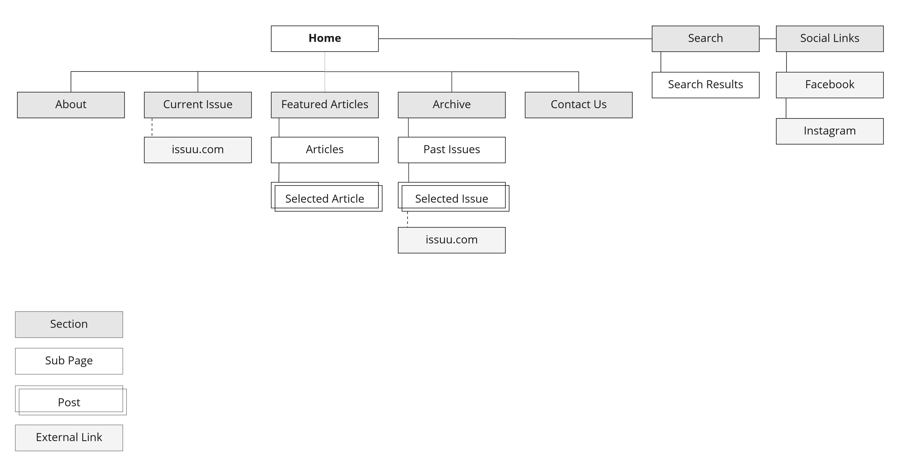
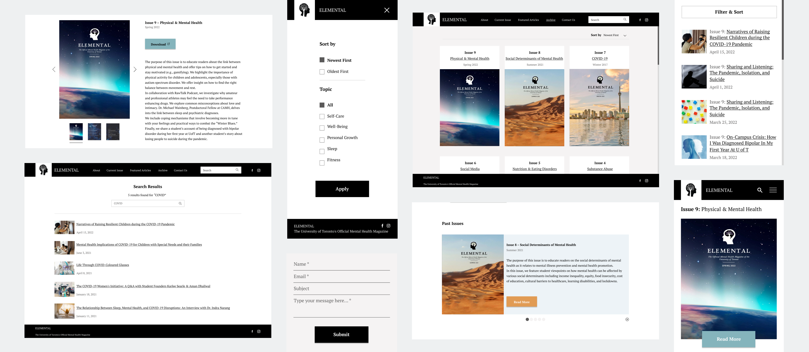

Elemental
Project Overview
Elemental, the official mental health magazine at the University of Toronto, features a streamlined one-page design with navigation links for convenient section access. The use of navigation links on websites provides a quick and direct way for users to jump to specific sections, making it easier for them to find what they are looking for. However, this design approach has its limitations. The structure of websites is limited to shorter and simpler sections, making it difficult to handle more complex content and information. This can sometimes result in a sub-optimal user experience, as users may struggle to find what they need and navigate the website effectively.
I redesigned the website to address pain points and improve user experience. The new multi-page design is optimized for desktop, tablet, and mobile devices, leading to ease of use and improved efficiency.
Role Research, UX, UI
Time6 weeks
Design Process
Research
I thoroughly analyzed the website to identify pain points and enhance user experience. The analysis revealed six improvement areas and I worked to find the best solutions for each.
For instance, some of the issues encountered were missing features such as a search bar, sorting and filtering options, and the inability to preview the table of contents before downloading.
Sitemap
I structured the website's information based on usefulness, usability, and user-friendliness, as determined by my research.
A visual sitemap was then created to outline the site's layout and content.

Wireframes
Using my accumulated knowledge, I structured Elemental's website content to align with project goals. First, I created low-fidelity wireframes, then moved on to designing the UI and creating high-fidelity wireframes.
VIEW PROTOTYPE 